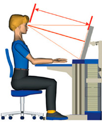

Влияние монитора на зрение.

Зрение человека способно различные объекты в обычном свете. Работа за компьютерным с монитором LG значительно отличается от того что человеческое зрение "привыкло" воспринимать. На мониторе идет сильное свечение непривычное для глаза,
изображение мерцает и цвета не соответствуют естественным цветам. Из-за этого и бывает зрительное утомление, особенно если человек находится перед монитором часами и не дает глазам необходимой "фазы расслабления" для глаз.
Таким образом зрение напрягается-работоспособность снижается.
Наибольшая нагрузка на зрение идет при вводе информации. Вы печатаете текст с носителя информации, а значит в это время вынуждены переводить взгляд с экрана на бумагу, затем на клавиатуру. При этом свет падает и отражается для глаза в разных проекциях.
Очень у многих пользователей ПК примерно через год возникает "Компьютерный зрительный синдром". Если ребенок долгое время находиться перед монитором - это может вызвать необратимые последствия для органов зрения.
Если человек длительное время работает (или играет) за монитором у него быстро развивается близорукость.
Доказано, что ЖК дисплей более подходит под зрение человека, но не означает, что он совсем для него безопасен. Даже если на него нанесено антибликовое покрытие.
Поэтому когда вы работаете за компьютером - сделайте освещение в помещении не очень ярким, но и не совсем темным. Перед Вами не должно быть окна, или на окне должна быть плотная штора.
ну, а главное чтобы монитор поддерживал частоту не менее 85Гц и не более 100Гц.
Следующая статья:
Что необходимо знать о мышах.